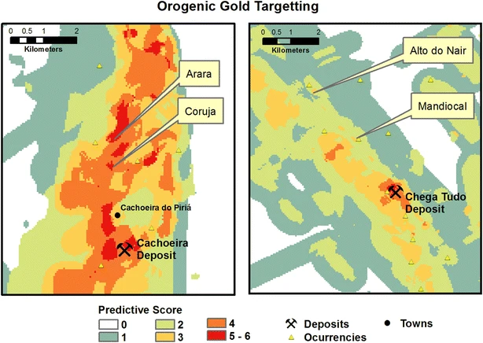

Predictive Mapping of Prospectivity in the Gurupi Orogenic Gold Belt, North–Northeast Brazil: An Example of District-Scale Mineral System Approach to Exploration Targeting

Resumo em Português
A Faixa Gurupi abriga uma província aurífera paleoproterozoica localizada no nordeste do Brasil, nas fronteiras dos estados do Pará e do Maranhão. Ela é considerada uma extensão da prolífica província aurífera Birimiana do Cráton da África Ocidental para a América do Sul. Além disso, a faixa tem sido objeto de recentes programas de exploração mineral com descobertas significativas de recursos. Este estudo apresenta os resultados de mapeamento preditivo utilizando conceitos atualizados de sistemas minerais e mapeamento geológico em escala regional, levantamentos de sedimentos de corrente e geofísicos aerotransportados recentemente concluídos pelo Serviço Geológico do Brasil. Relacionamos a mineralização aurífera a uma crosta inicialmente enriquecida, metamorfismo, vias de fluidos profundos, zonas de dano controladas estruturalmente e alteração hidrotermal. Alvos prospectivos foram gerados utilizando apenas conjuntos de dados públicos regionais e uma técnica de direcionamento baseada em conhecimento. Este trabalho não incorporou nenhum depósito aurífero conhecido, mas previu os maiores depósitos conhecidos e seus alvos satélites. Além disso, alvos de alto potencial mapearam quase 40% das ocorrências primárias de ouro conhecidas em 7% da área do projeto. Este trabalho permitiu uma redução considerável da área de busca e a identificação de novas áreas-alvo, contribuindo assim para a redução de custos, tempo e riscos da exploração mineral. Os resultados indicam que alcançamos uma compreensão eficiente dos processos geológicos relacionados ao sistema mineral do Cinturão de Gurupi.